计算机网络——第五章：链路层
链路层
概述
- 负责在物理上相连的邻居节点间传输（一个子网内部），封装了网络层的datagram的frame
- 负责区间很小，仅在一段链路上
- 所有的主机、路由器视为：节点
- 链路：
- 有线链路
- 无线链路
- LANs
实现
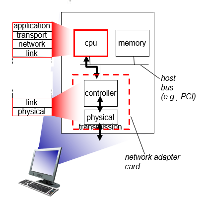
错误检查
EDC码：Error Detection and Correction bits (redundancy)
- 不是100%可靠的
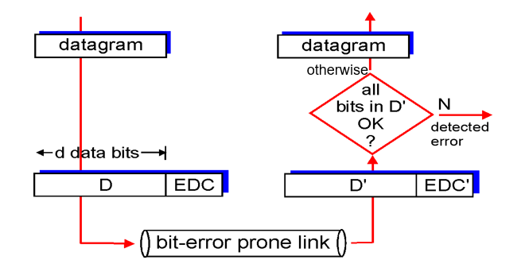
奇偶校验
单独奇偶校验：
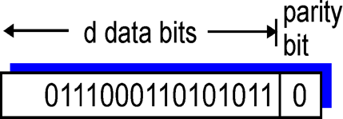
二维奇偶校验：
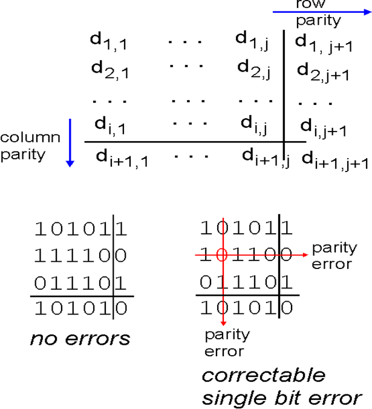
CRC(Cyclic redundancy check)
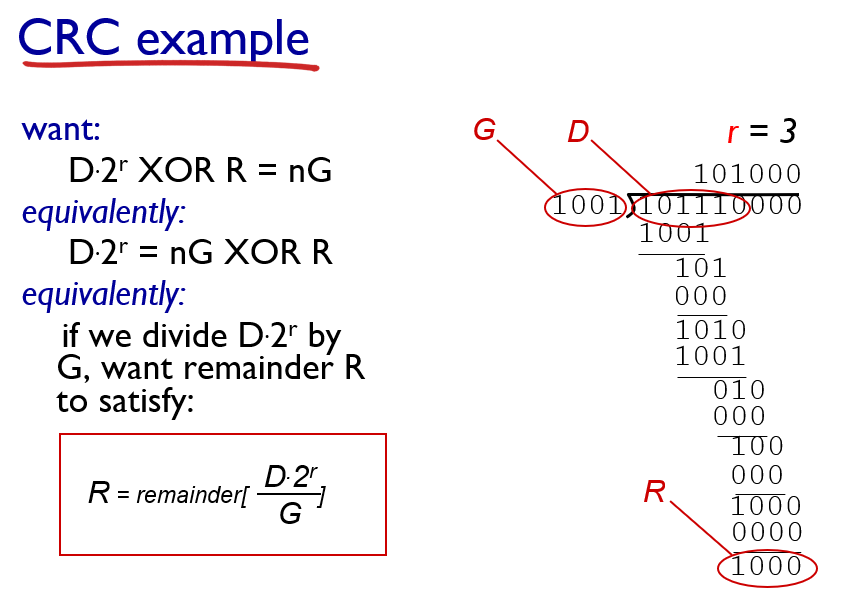
多路访问协议（Multiple Access Control， MAC）
概述
提出
两种链路：
- 点对点：由链路一端的单个发送方和链路另一端的单个接收方组成
- 协议：点对点协议（ point- to- point protocol,PPP)和高级数据链路控制 （high-level data link control, HDLC)
- 多播：能够让多个发送和接收结点都连接到相同的、单一的、共享的广播信道上。
- MAC即为了解决邻居节点之间数据包在共享链路上的碰撞（collision）问题。
理想的多路访问协议
初始条件：广播链路总带宽：R bps
情况：
- 只有一个节点需要传输，其使用R带宽
- M个节点需要传输，每个节点被分配相同的带宽：R /M（不能碰撞，碰撞会损失所有节点的带宽）
- 完全去中心化（decentralized）
- 没有特殊的协调传输的节点
- 没有全局时钟同步
- 越简单越好
同时满足上述情况的协议并不存在
分类
MAC协议分为三个大类:
信道划分：将信道划分为较小的“段”，一般有频分多址（FDMA）、时分多址(TDMA)、码分多址（CDMA），为节点分配排他性的一部分信道使之专用。
- 完全消除collision
- 但效率有时候很差
- 实现上述理想协议的第二点
随机访问：不划分信道，==允许碰撞发生==并想办法从“碰撞”恢复。一般而言为竞争类的MAC协议，当然也有分配类和混合类的协议。对于WLAN，其中竞争类协议主要有CSMA，MACA，MACAW，FAMA，BTMA等。而非竞争类的协议主要有FPRP等协议。
- 实现上述理想协议的第一点（第二点由于collision不能实现）
“轮流”：节点轮流，但有更多信息要发送的能够轮流的较长时间。
信道划分协议
两种资源：时间、频率，因此有两种划分方式：时分复用和频分复用。
只有少数节点传输时，效率很差
TDMA（time division multiple access）
- 切分时间，以轮次进入信道
- 每一个节点在每一轮都有固定的长度槽(长度= pkt 传输时间)
- 未使用的槽将置为空闲
例子：6个节点的局域网，134被划分，其余空闲
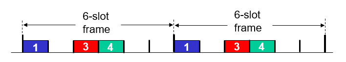
FDMA: frequency division multiple access
- 信道频谱被分为若干个频带
- 每个节点被分配固定频段
- 频带内未使用的传输时间变为闲置
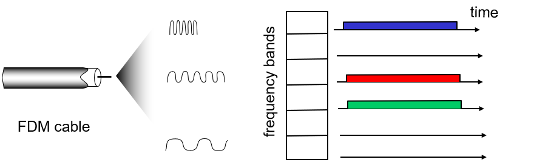
随机访问协议
重点：怎么检测冲突并从冲突回复
下述协议都为随机访问：
slotted ALOHA
ALOHA
CSMA, CSMA/CD, CSMA/CA
Slotted ALOHA
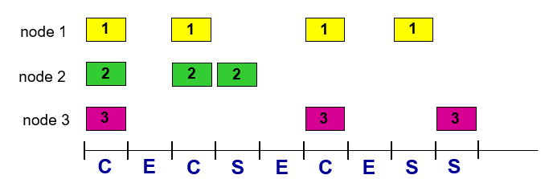
- 进行全局时钟同步，每个时间单元边界发送数据
- 发生冲突，随机选择下个时间单元是否休息，直到没有冲突发生==（完全凭运气）==
- 效率约 37%
Pure (unslotted) ALOHA
- 不在时间边缘发
- 效率18%左右
载波侦听多路访问CSMA (carrier sense multiple access)
- 节点要发数据时，先监听信道，如果为idle，把数据帧放入链路；如果有数据正在传，则延迟直到空闲时再发
比较有礼貌，从不打断别人
由于信号的传输延迟，，二者可能都未监听到其他节点的传输，碰撞依然会发生。如下图：t1时刻并未监听到t0时刻的发送，传输数据，产生collision
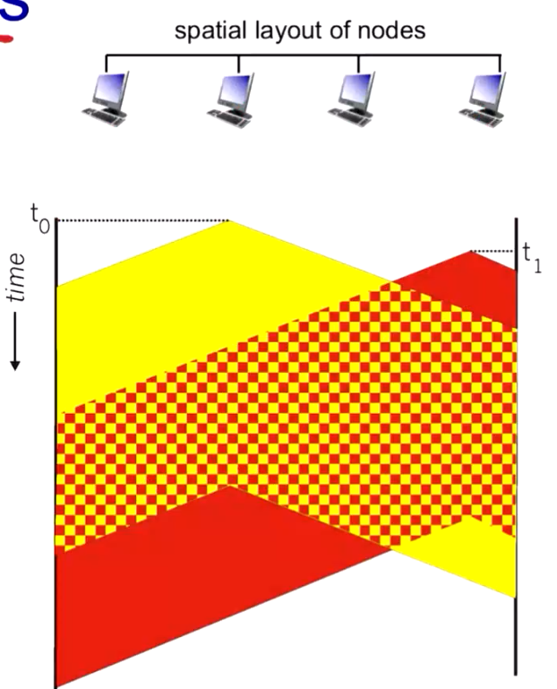
由于只在发送之前去监听，因此在碰撞发生时也继续发送，直到自己的数据帧发送结束
CSMA/CD(collision detection)
带有冲突检测的载波侦听多路访问，边发边检测
检测到碰撞后，立即停止发送
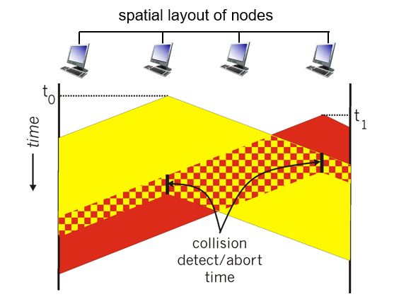
停止发送后，每一个网卡进入二进制指数退避算法（binary (exponential) backoff: ）
- 从${0,1,2, …, 2^m-1}$(m为碰撞次数)中随机选择一个值K，休息K 个周期再发送。
- 随着碰撞次数增加，重传成功概率大大增加
LANs
MAC地址
网卡有两个地址：
- 32位IP地址：网络层模块分配的地址，可能来自手动分配的静态IP或者来自DHCP分配的动态IP（和子网其他节点的前缀相同）
- 类似于邮件地址，不同网络的地址不同
- IP地址是有层次的，分为前缀（局域网）和后缀（内网编号）
- MAC地址（静态/局域网/物理地址）：厂家烧录在网卡中，无法修改。
- 48 bit
- e.g.: 1A-2F-BB-76-09-AD(16进制的形式)
- 类似于ID，每个设备唯一
- 由IEEE分配，厂商从IEEE中购买MAC地址段。
- MAC地址是平的flat，有可移植性
一个局域网中设备有着独一无二的LAN（MAC）地址，和相同前缀的IP地址
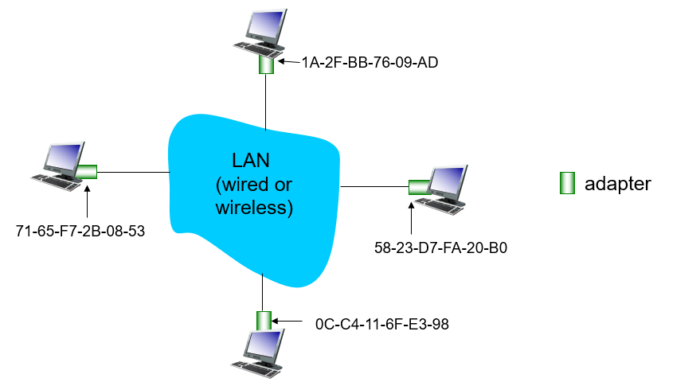
ARP协议
交换机只能识别FRAME包头的MAC地址，但SRC封包时并不知道其DEST对应的MAC地址，因此需要通过dst IP找到对应的dst MAC。对于因特网而言，这是地址解析协议（Address Resolution Protocol， ARP)[ RFC 826]的任务。
- 每一个IP节点（主机、路由器）都有一张ARP表，记录当前局域网的IP与MAC映射关系。这张表由ARP创建
- A想向B发送数据，此时A ARP表没有B的MAC地址
- 此时A在局域网广播一个包，包含B的IP，此时frame的包头 dst MAC = FF-FF-FF-FF-FF-FF.（全1即表示广播包）
- LAN里所有节点接受该查询包
- B接受到ARP包，给A回复B的MAC地址（单播）
发送数据到子网以外
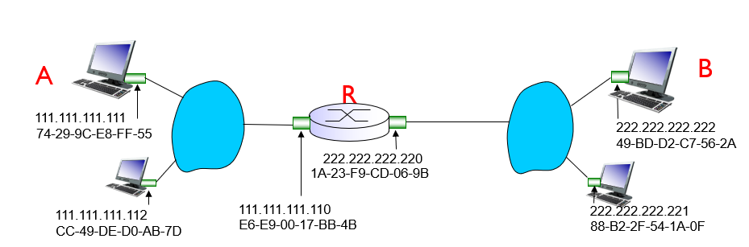
已知条件：
- 关注地址：在datagram中的IP和frame中的MAC
- 假设A知道B的IP,路由器的IP==（how?）==，以及R连接本网络网卡(网关)的MAC==（how?）==
- 注意：DHCP推送信息：A 的IP，子网掩码，DNS服务器IP以及==网关IP==
- 通过ARP得知R的==网关的MAC==
流程：
A封包datagram，包含IP source A, destination B
A封包frame,包含dest：R’s MAC address 和上层的datagram(注意，发送到外网的包dest IP和dest MAC一定不一样)
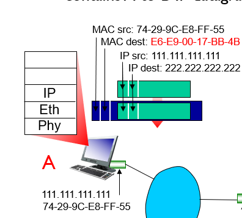
路由器转发
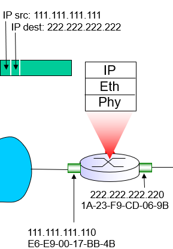
路由器重新封包，指向内网的B，此时dest的IP和MAC地址相同
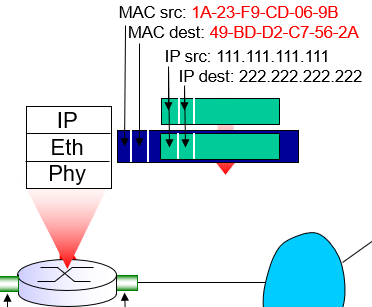
B收到包，依次向上传递，解包
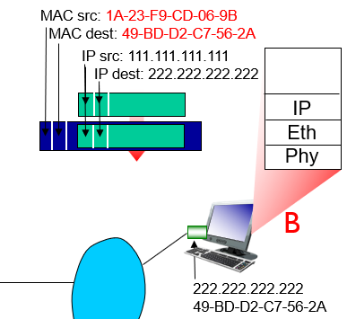
以太网
链路层的一种协议，使用的frame结构（包头加CRC尾部）仍被广泛使用
交换机
- 路由器是网络层设备，交换机是链路层设备
- 交换机只处理frame包头
透明设备：不用任何配置，插上就能用。路由器需要合理分配不同子网。
交换机能够==学习==哪些主机可以通过哪些接口到达：一旦从一个接口收到数据报，边在表中记录接口与主机的对应关系，一旦表中没有，就广播，记录所有值，
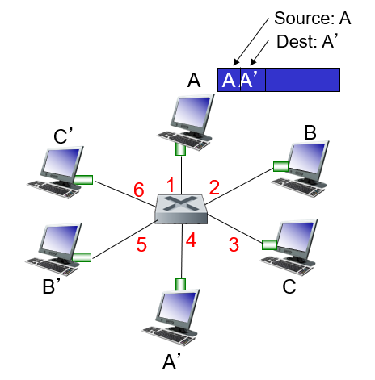